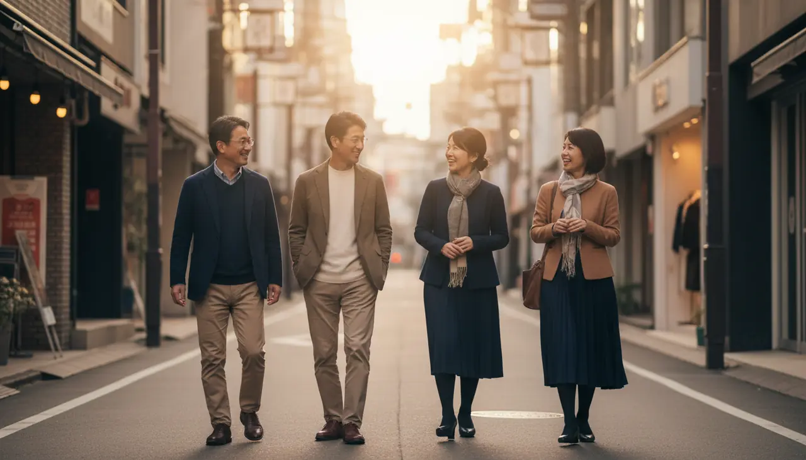

筋
握力や下肢筋力などは年齢とともに変化します。ただし、日常生活の活動量や運動習慣でも差が出ます。
「前より疲れる」を、老化の一言で終わらせない。50代では筋力、持久力、バランス、回復の仕方などが別々に変化します。

身体の変化は、
一斉には起きない。
握力や下肢筋力などは年齢とともに変化します。ただし、日常生活の活動量や運動習慣でも差が出ます。
全身持久力は「活発な身体活動を維持するための体力」という見方ができます。疲れやすさを考える重要な軸です。
仕事・睡眠・生活リズムが重なると、単純な運動不足では説明しにくい疲れ方になります。
歩く距離、立ち上がる回数、階段、家事なども身体活動です。運動ゼロか100かではなく、今より少し増やせる余地を見ます。
運動中の息の弾みと、安静時の息苦しさは同じ意味ではありません。不安な症状はセルフ改善より受診判断を優先します。
朝のすっきり感、夜間覚醒、生活時間の乱れも「回復」の地図に入れます。
一週間の過ごし方を抜きにして、最適な運動量だけを切り出すことはできません。続く設計を優先します。
NOT “OLD”.
DIFFERENT.